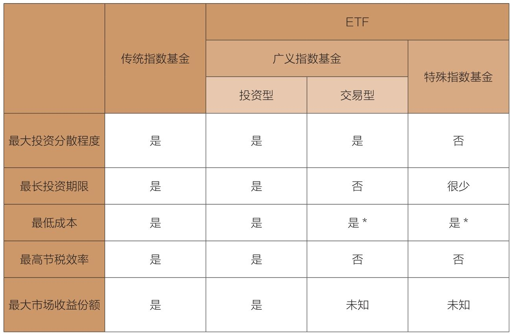
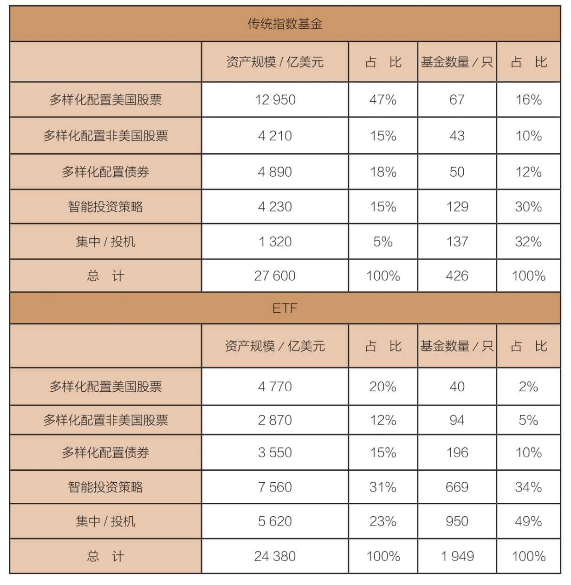

Spider早期的广告鼓吹：“现在，你可以按照实时价格，全天候交易标准普尔500指数。”你当然可以这样做，但是你的收益是什么呢？
投资ETF的风险相当于只投资一只股票，到底有多少人真正需要这样的投资产品呢？
过去10年，传统指数基金深受一只披着羊皮的狼——交易型开放式指数基金（exchange-traded fund, ETF）的挑战。简单来说，ETF就是专为交易便利而设计的指数基金，也是经过伪装的传统指数基金。
几十年前出现的传统指数基金，其最初的理论架构是长期投资。如果将指数基金作为短期交易的工具，那么只能被视为一种短期投机行为。同理，如果最初主张分散投资，那么只持有市场上某一板块的股票，即使已经具有了足够的多样性，投资的分散程度必定会减少，风险也因此会更高。
如果最初想要尽可能地压低成本，那么持有某一行业板块的指数基金除了会导致成本上升以外，还要负担交易时的经纪佣金。即使运气不错，投资者也还是要承担税金。
请允许我说得再清楚一点。投资这些追踪整体股票市场的指数型ETF并没有什么错，只要你避免进行短期交易。短期投机是输家的游戏，长期投资是一种行之有效的策略，广义市场指数基金非常适合执行这一策略。
传统指数基金的基本特征是保证投资者从股市中获取合理的收益。但在现实生活中，从事ETF交易的投资者却根本得不到这种保证。实际上，在扣除所有额外成本、税金、错误选择股票和市场时机造成的损失之后，ETF投资者根本搞不清楚投资回报与股市收益之间究竟存在何种关系。
传统指数基金与ETF之间的差异显而易见（见表15-1），它们是截然不同的东西。留给我的疑惑，正如一首老歌所唱的那样：“天呐，他们怎么把我的歌唱成这样了？”
表15-1 传统指数基金与ETF对比

*不包含交易成本时。
世界上的第一只ETF诞生于1993年，被命名为“标准普尔信托凭证”（Standard & Poor's Depositary Receipts, SPDRs）。很快，因为SPDRs的拼写近似于“Spider”，人们就称为“蜘蛛”。这绝对是一个精妙的创意。ETF投资于标准普尔500股票指数，凭借其低运营成本、高节税效率以及长期持有的特点，成为传统的标准普尔500指数基金(1)最强劲对手（不过，由于经纪人要收取佣金，因此，它不适合投资者进行定期小额投资）。
2017年早些时候，SPDRs 500仍然是最大的ETF，资产超过2 400亿美元。2016年全年，约有260亿份Spider标准普尔500指数达成交易，总成交量达到令人震惊的550亿美元，年换手率达到2 900%。从交易量来看，Spider每天都是全世界交易最广泛的股票。
Spider和其他类似的ETF一样，使用者大多数是短线投资者。银行、主动型基金经理、套期交易者以及职业交易员等全球最大的客户，持有约一半的ETF资产。他们疯狂交易持有的ETF份额。2016年，这些大交易商持仓换手率的平均值接近1 000%
最初单一的标准普尔500指数ETF发行后，整体ETF出现爆炸式增长，在2017年年初时，其资产占所有指数基金资产的一半，即50万亿美元中的25万亿美元。其市场份额从1997年的9%到2007年的41%，再到2017年的50%。
时至今日，ETF已经成为金融市场上一股不容忽视的力量。它们的交易金额有时达到整个美国股票市场交易金额的40%，甚至更多。事实证明，ETF能够满足投资者和投机者的需求，也是股票经纪人从上天得到的恩赐。
这种令人难以置信的增长速度，彰显了华尔街金融家们的能量、货币基金经理对敛财的执着与专一、经纪公司强大无比的营销能力，以及投资者爱复杂胜于简单的观念。无论结果怎样，不管发生什么，投资者都将继续相信他们能战胜市场。我们不妨拭目以待。
无论是数量还是品种，ETF的发展都已经近乎飞奔。目前市场上存在2 000多只ETF（从10年前的340只增长而来），可供选择的投资种类实在太多了(2)。
ETF在产品性质上完全不同于传统指数基金（见表15-2）。例如，ETF仅有32%的资产投资于股票市场指数基金（美国和全球），如Spider；而传统指数基金中此类资产占比高达62%。目前有950只ETF的产品性质属于集中、投机、逆向及杠杆扩张，占ETF总资产的23%。但仅有137只传统指数基金与ETF类似（占传统指数基金资产的5%）。
表15-2 传统指数基金和ETF的资产对比，2016年12月

669只ETF专注于智能投资策略（smart and factor strategies），244只投资特定股票，156只集中投资特定国家。另外还有196只投资分散的债券，422只采用杠杆扩张（让投机者能够赌股票市场的涨跌方向，然后赚取1倍、2倍、3倍，甚至4倍的价格波动幅度）或其他高风险策略。
另外，ETF的现金流入具有很大的不稳定性，尤其对比传统指数基金稳定的现金流入。从2007年4月股票市场处于高位，到2009年4月（股市刚暴跌50%不久）的24个月里，传统指数基金没有一个月出现现金负流入。然而，ETF在这24个月里有10个月出现现金负流入。从2007年12月流入310亿美元（接近市场高点），到2009年2月流出180亿美元，股票价格触底，充分显示了投资者不理智的投资决策。
是的，在几乎所有方面，多数ETF都背离了传统指数基金的原则：买入并持有、分散投资以及压低成本。
整体市场ETF可以复制传统指数基金的5种基本原则，前提是它必须买入并长期持有相关资产。它们和对应的共同基金的年费率正趋于等比。尽管它们的交易佣金侵蚀了投资者赚取的收益。
正如Spider早期的广告所说的：“现在，你可以按照实时价格，全天候交易标准普尔500指数。”你当然可以这样做，但收益是什么？我不由想到世界上质量最好的Purdey牌猎枪。把ETF比作Purdey牌猎枪再恰当不过了。
Purdey牌猎枪是非洲猎杀大象的绝佳武器，但它也是自杀的最佳工具。我怀疑，大多数ETF早晚有一天都将证明，即便从财务角度上还不能说这是投资者的自杀行为，但至少也会损耗大量财富。
但是，不管一个市场板块的ETF能实现多少收益，其投资者的收益却很有可能（甚至可以说注定）远远低于这个数字。大量的证据表明，眼下最热门的板块基金必然是那些刚刚从辉煌中走出来的基金。但是这类成功不会持久，别忘了均值回归。
事实上，这种追逐过往收益的投资策略，几乎注定要失败。所以说，第7章里提到的教训——共同基金投资者赚取的收益总是落后于他们投资的基金，尤其是那些价格波动剧烈、投资分散程度不足的基金。这种情况很有可能在ETF再次出现。
为了更形象地说明这一点，我们不妨回忆一下2003—2006年表现最优秀的20只ETF。在这20只ETF中，只有1只ETF的股东收益超过了基金本身的收益。股东的年均收益低于基金自身收益5%，最大差距竟然高达14%（iShares奥地利基金公布的收益率为42%，但投资者只能得到28%的收益）。对于任何一个贴着“ETF”标签的基金，我给你的第一个提醒就是“小心应对”。
于是，投资者不论是主动选择，或是被经纪人说服从事ETF的短线交易，大多会因为时机选择不当而承受损失，因为他们很可能会选到即将下跌的热门股票。另外，短线交易也带来了大量佣金和其他随之而来的费用，而这些都会降低投资者的收益。
投资者如果同时受情绪和成本所困，必将难以获得理想的收益。这还没有考虑为此浪费的大量时间。这些时间原本可以用于生活和娱乐。
2006年开始，ETF被视为能够战胜市场的投资工具（细节参考第16章）。然而，选择ETF意味着会引来股票经纪人。他们热衷于鼓励投资者买卖ETF，以实现短期获利。对此，我绝对不敢苟同。
ETF显然让这些企业家、经纪人和基金经理美梦成真，但对投资者来说是否一样呢？投资者能从ETF的全天候实时交易中受益吗？它究竟是提升了还是降低了投资分散程度？它是在追随赢家的足迹，还是在重蹈输家的覆辙？如果把经纪人佣金纳入考虑，这些ETF还能不能算作低成本？频繁买卖和买进并持有的交易策略之间，到底哪个更胜一筹？
最终，如果说传统指数基金旨在充分发挥长期投资的优势，那么这些指数基金新宠的投资者不是正把时间和精力浪费在毫无益处的短期投机上吗？只要动用你自己的常识，这些问题的答案不就一目了然了吗？
金融行业的从业者既要追求企业利益，又要维护客户利益，ETF在其中扮演着怎样的角色呢？如果投资者大笔投资于先锋500 ETF和SPDRs 500 ETF，按照较低的佣金比例并长期持有，他们就能受益于这类工具提供的投资分散程度和低成本，甚至还能享受一定的节税效应。
然而，如果把这两种ETF当作短线交易工具，就完全违背了成功投资的原则。投资者如果偏爱某一产业板块的ETF，就应该挑选合适的项目进行长期投资，而不要从事短线交易。
现在，我要回答本章开头提到的那个问题：“天呐，他们怎么把我的歌唱成这样了？”作为世界上第一只共同基金的创建者，我只能回答：“他们把歌装在塑料袋里，然后翻过来扣在地上，妈妈，他们就这样糟蹋我的歌。”
总之，ETF完全脱离了指数基金的初衷。我强烈奉劝聪明的投资者，一定要坚守业已被实践证明了的投资策略，不要轻信所谓的潮流和时尚。尽管我不能说标准的指数基金是迄今为止最好的策略，但常识应该能让我们相信：糟糕的策略比比皆是。
唐·菲利浦斯（Don Phillips）是晨星公司的执行董事。他在一篇名为《走向好莱坞的指数化》（Indexing Goes Hollywood）的文章中指出：“指数化也存在一个投资者不应忽视的阴暗面。随着专业化程度的提高，投资者遭受损失的危险性也越来越大，而这正是ETF所做的一切……如果运用得当的话，精确的工具可以创造出精妙的事物；而一旦使用不当，就有可能带来巨大的灾难。在创造更为复杂的产品的过程中，尽管指数借助高度专业化的工具找到了新的收益来源，但是对那些不够专业的投资者来说，这些专业工具带来的风险同样也不可低估。因此，指数投资面对的考验是到底应该忽略这些风险，还是应该义无反顾地继续向前，同时想方设法缓解这些风险。”
《指数周刊》（Journal of Indexing）的编辑吉姆·魏安特（Jim Wiandt）认为：“和金融行业中的大多数现象一样，指数产品总是来也匆匆，去也匆匆，这确实具有讽刺意义。对冲基金指数、微型股指数、红利指数、商品指数、中国指数，以及增强型指数（enhanced index，在追踪标的指数的同时，借助其他分析工具或金融产品来试图获得超过标的指数收益，即狭义上的积极指数化）无不昙花一现。这些指数之间的共同之处，可以归结为以下三点：追随业绩，追随业绩，还是追随业绩。”
“如果你信任指数化投资，你就应该知道，永远都没有白捡的钱。归根到底，所谓的增强型指数，不过是为了增加基金的收益而已。对投资者而言，最重要的就是要盯住手里的钱，牢记指数化之所以成为指数化的根源——低成本、投资高度分散以及长期持有。当我们试图战胜市场的时候……为了战胜市场而耗费的成本，很有可能会让我们成为输家。”
现在，我们再来听听一家大型ETF赞助商的两位高管怎样说。首席执行官说：“对大多数人来说，行业基金并没有什么意义……（不要）过分偏离市场的正常轨道。”首席投资总监说：“如果只盯着某一点，把赌注下在某一投资领域和它狭窄的ETF上，将是一件很遗憾的事情，其风险相当于只投资于某一只股票……此时，你所承担的风险将非比寻常。也许他们是想做件好事，不过这是自作聪明之举……到底有多少人真正需要这样的投资产品呢？”
(1)迟到的莫斯特先生，一个好男人，起初提议作为先锋基金的合伙人，以我们的标准普尔500指数基金作为交易工具。自从我意识到交易对投资者来说是输家的游戏，对经纪人而言则是赢家的游戏，我就拒绝了他的提议，但我们仍然是朋友。
(2)在写作本书时，又有250多只ETF在此前12个月里上市，大约200只ETF注销。高企的上市和注销比例表明，一个新的投资热潮正在酝酿。而这些热潮对投资者在市场上的福利几乎是无能为力的。